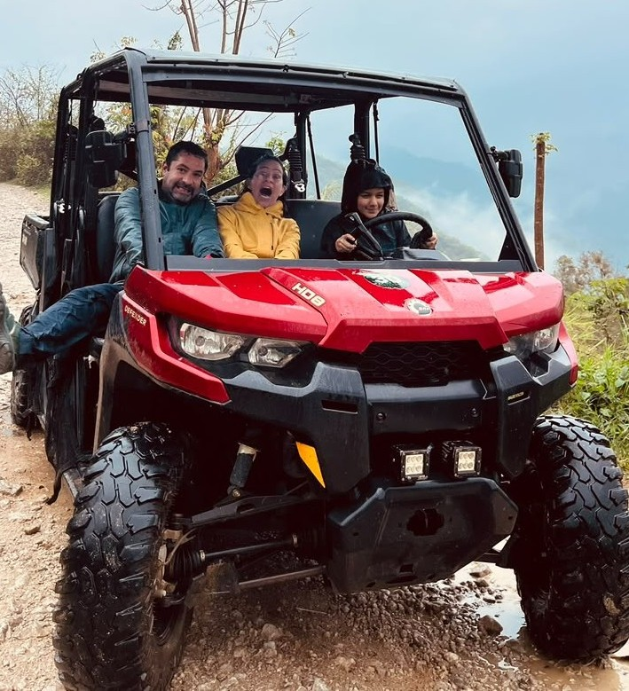

Xilitla 4x4
Bienvenido a Xilitla 4x4
Bienvenido a Xilitla 4x4, un espacio dedicado a los amantes de la aventura, la naturaleza y la adrenalina. Aquí podrás conocer nuestros tours en RZR y descubrir algunos de los lugares más increíbles de Xilitla, San Luis Potosí.
Nuestros recorridos te permiten disfrutar de caminos llenos de aventura, paisajes naturales y experiencias diferentes. Sube a un RZR, prepárate para la emoción y vive Xilitla de una manera completamente diferente.
Tours en RZR
En Xilitla 4x4 contamos con diferentes opciones para disfrutar de la naturaleza y recorrer caminos de la región. Cada tour está pensado para que puedas disfrutar de una experiencia llena de aventura y adrenalina.
